Panadería rico pan
Este reconocido establecimiento se destaca por su variedad de fritos tradicionales como deditos de queso, empanadas, buñuelos, panzerotti y papas, también se venden diferentes tipos de panes y pasteles.
Además, funciona como tienda, ofreciendo bebidas, arepas y snacks, por eso, es un lugar ideal para disfrutar de un desayuno típico o una merienda rápida.
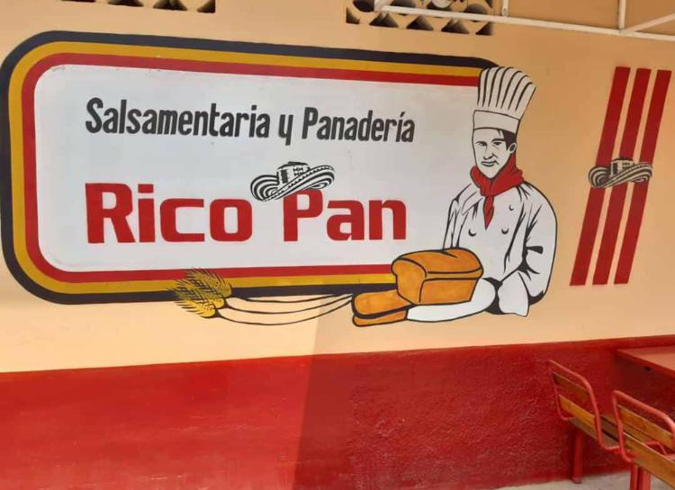
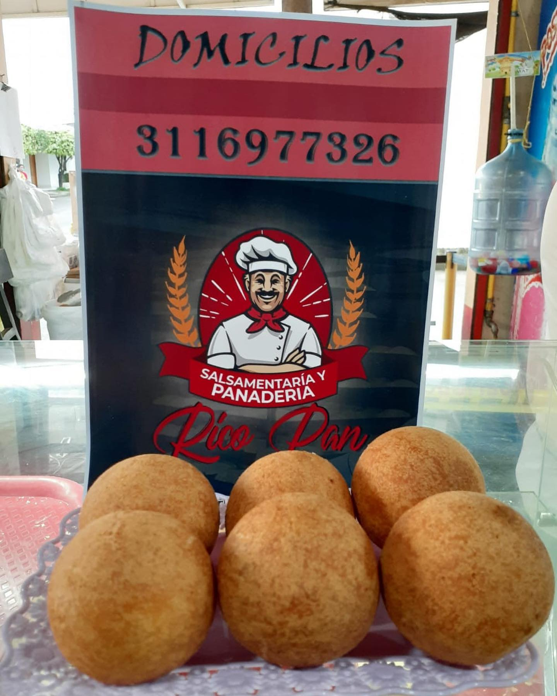
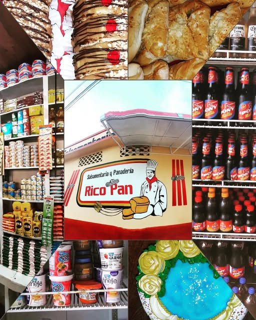
Restaurante la perla
Este restobar ofrece una combinación de comidas como suchi, hamburguesas, comida del mar, entre otras comidas, acompañado de bebidas alcohólicas o juegos, con un ambiente agradable, familiar y romántico.
Cuenta con un espacio al aire libre decorado con árboles, iluminación y un mural de temática marítima, lo que lo convierte en un lugar perfecto para compartir u disfrutas de buena comida.
It features an outdoor space decorated with trees, lighting, and a nautical-themed mural, making it a perfect spot to share a meal or enjoy good food.

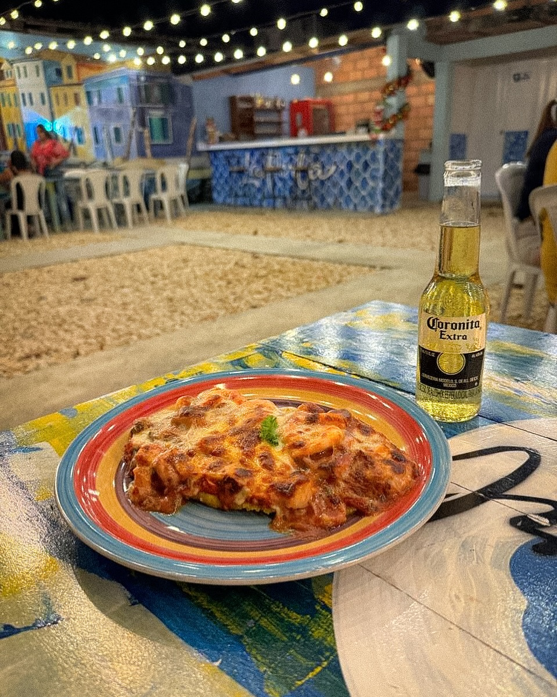
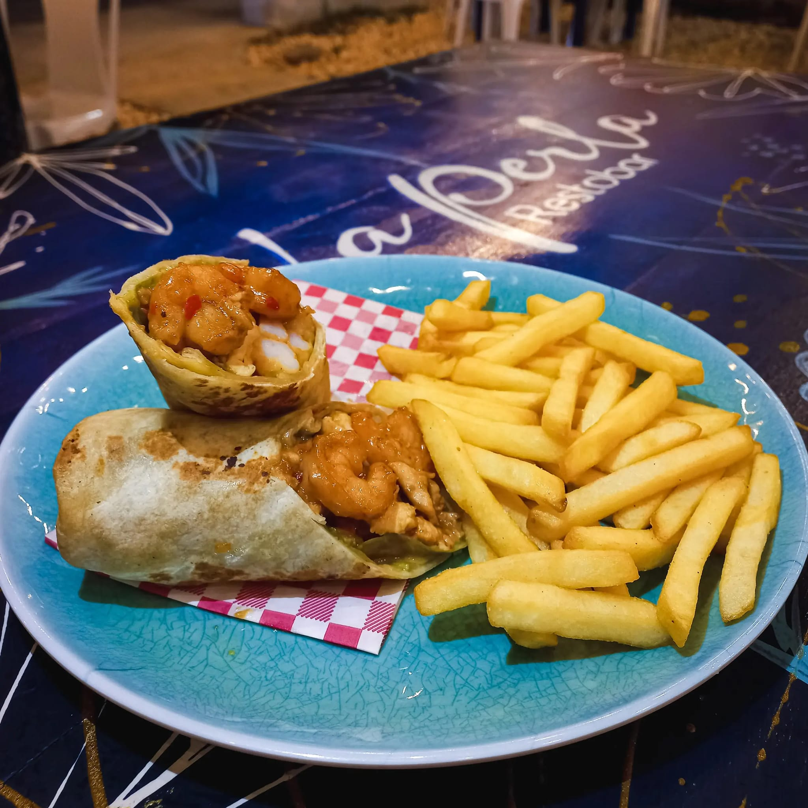
Heladería, la esquina del helado
Este lugar es ideal para quienes buscan algo dulce y refrescante, ya que ofrece una gran variedad de helados con combinaciones de frutas, cereales, galletas y salsas.
This place is ideal for those looking for something sweet and refreshing, as it offers a wide variety of ice creams with combinations of fruits, cereals, cookies, and sauces.
También cuenta con malteadas y, en horarios nocturno, opciones de comidas rápidas, adaptándose a diferentes gustos y presupuestos.
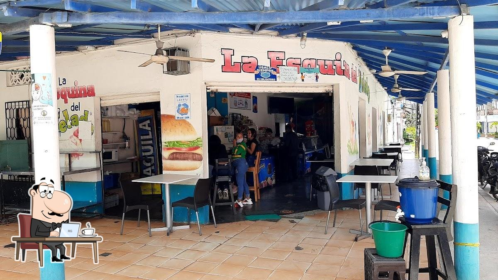
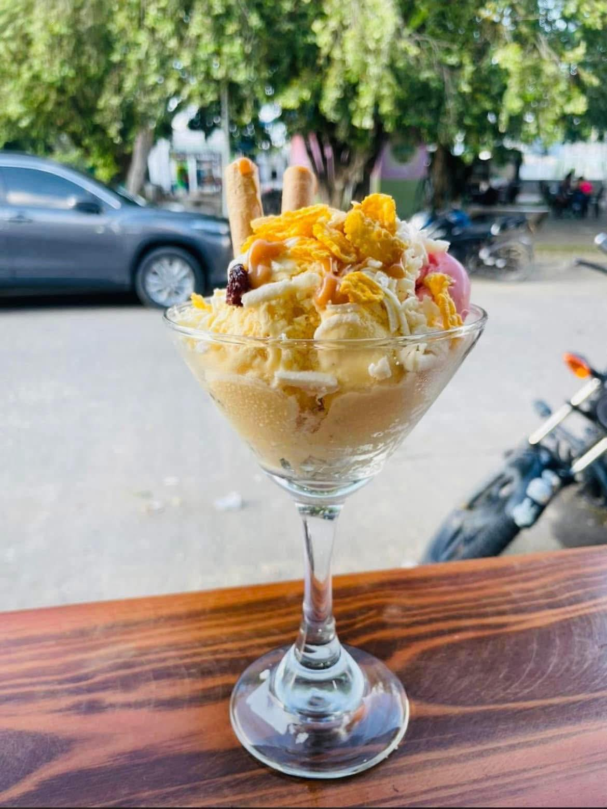
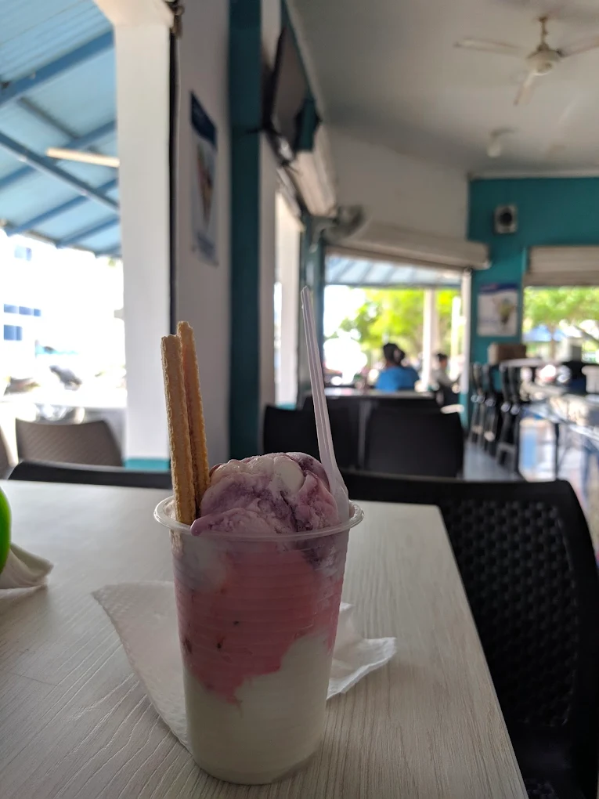
Restaurante de pollo, riki pollo
Especializado en pollo asado, este restaurante es reconocido por su sabor jugoso y crocante.
Además, ofrece porciones que van desde cuartos hasta pollos enteros, acompañados de papa, arepa o bollo, junto con diferente salsa. Además, brinda servicio a domicilio, facilitando el acceso a sus productos.
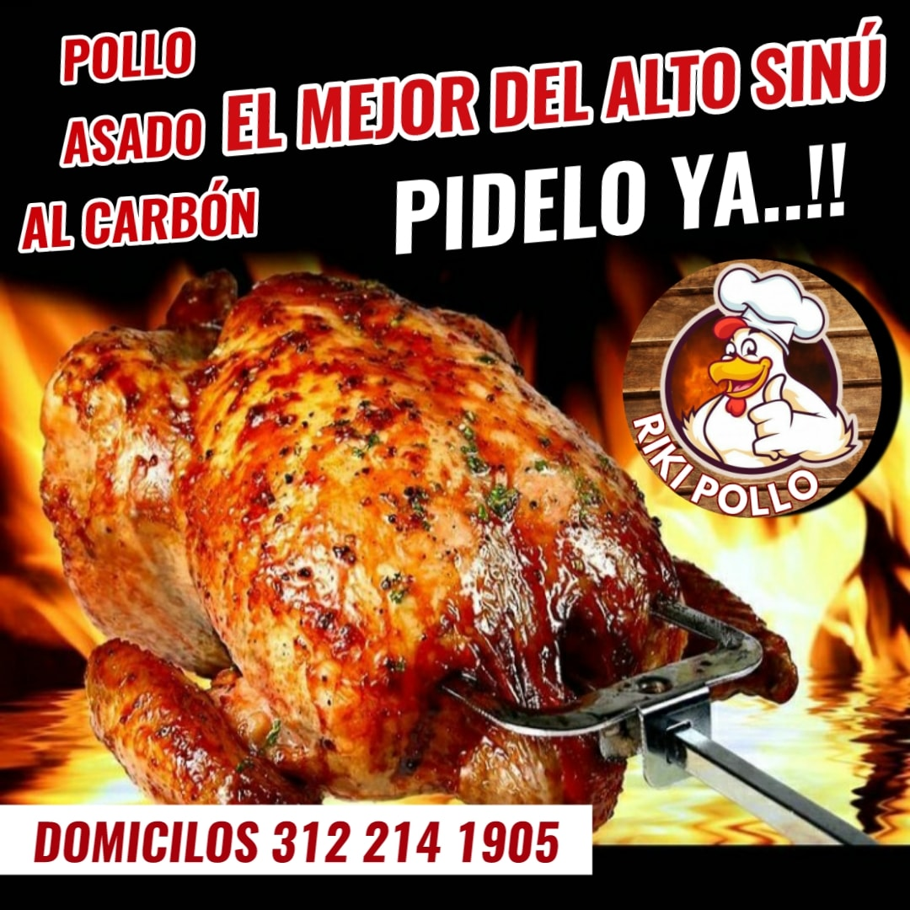
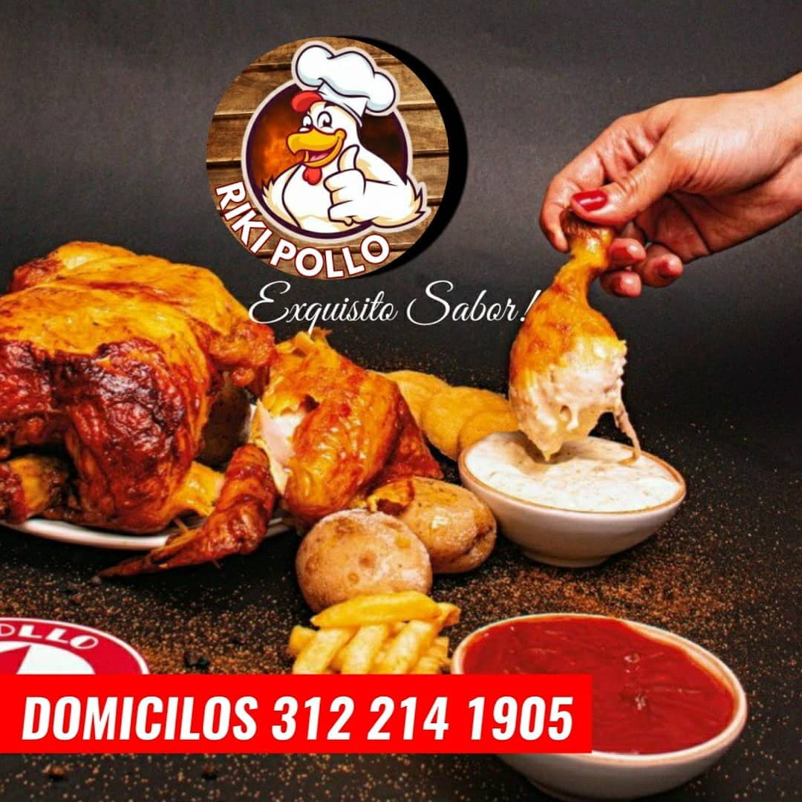
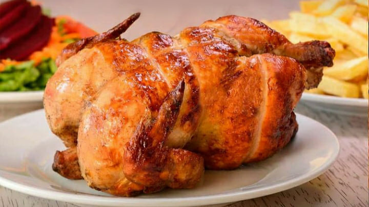
Restaurante, el sazón criollo
Este restaurante se especializa en comida tradicional de la región, ofreciendo platos como sancocho de pescado, bocachico en diferentes preparaciones, carne, frijoles y gallina guisada en coco.
Es una excelente opción para quienes desean probar la autentica sazón de Tierralta en un ambiente cómodo y acogedor.
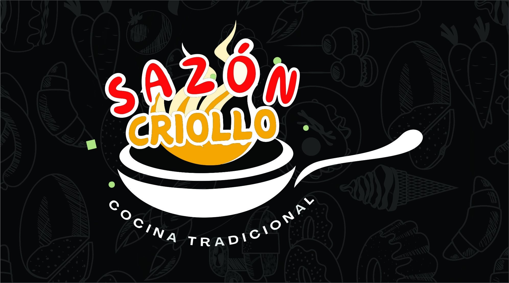
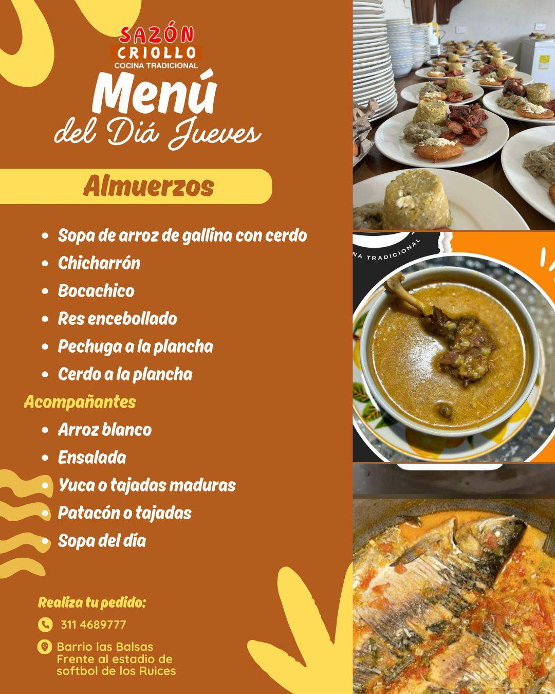
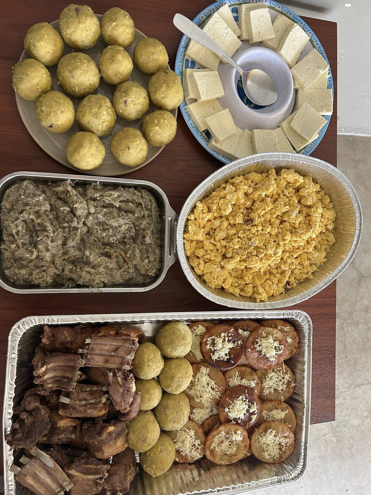